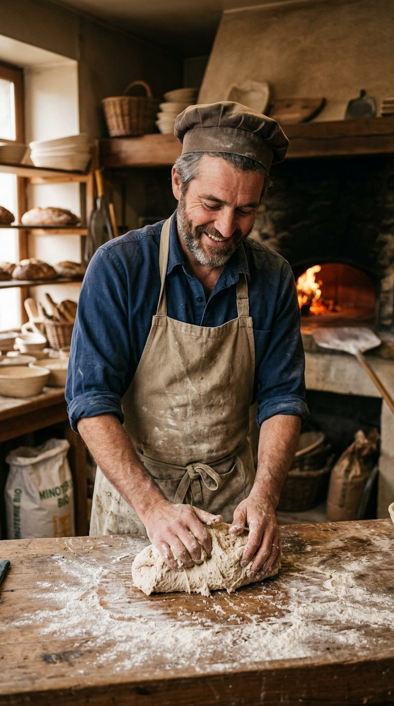
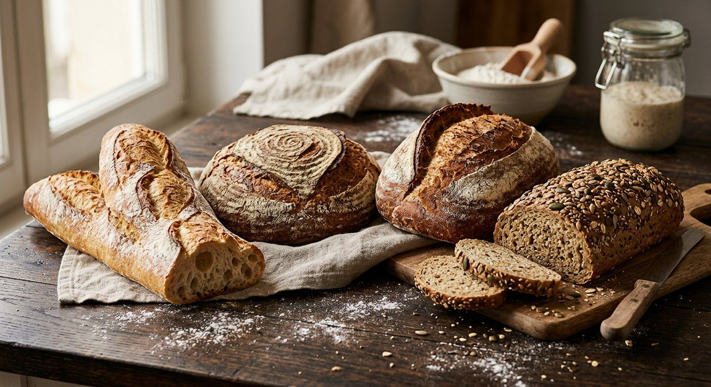

Le pain ne se presse pas
Vingt-quatre heures séparent le premier pétrissage de la première bouchée. Voilà à quoi ressemble une journée derrière la porte du fournil.
Un fournil, une famille, un levain
Quand Jean Pérez ouvre la boutique en 1987, Martigues compte alors sept boulangeries. Il choisit de ne pas vendre moins cher, mais meilleur : fermentation longue, farine de meule, aucune levure industrielle. Les débuts sont lents, puis la file s’installe le samedi matin.
En 2014, son fils Karim, formé chez un Meilleur Ouvrier de France à Lyon, reprend la main. Il fait construire un four à sole en brique réfractaire, alimenté au bois d’olivier taillé dans le pays. Le levain-chef, lui, n’a jamais quitté son bocal.
- Un seul levain, rafraîchi deux fois par jour depuis 1987
- Farines moulues sur pierre par deux moulins de Vaucluse
- Aucun additif, aucune pâte surgelée, aucun pré-mélange
- Invendus donnés chaque soir à l’association du quartier

Six gestes, douze heures
Rafraîchir le levain
À 3 h du matin, on nourrit le levain-chef : farine, eau, repos à 26 °C. Il double de volume en trois heures et donne la signature de la maison.
Pétrir lentement
Douze minutes en première vitesse. Un pétrissage trop rapide échauffe la pâte et tue les arômes : on préfère attendre.
Laisser pointer
Deux à quatre heures de fermentation en masse, avec deux rabats à la main pour renforcer le réseau glutineux.
Façonner
Bâtards, miches, baguettes : chaque forme est façonnée à la main, sans moule ni machine à bouler.
Grigner
Un coup de lame net pour guider la pousse. C’est la grigne qui dessine l’oreille de la baguette.
Cuire au feu de bois
250 °C sur sole de brique, buée en début de cuisson. La croûte caramélise, la mie se fige en alvéoles.
Ce à quoi nous tenons
Filière courte
Blé cultivé à moins de 120 km, moulu en Vaucluse. Nous connaissons le nom des agriculteurs qui nous livrent.
Prix justes
Un pain au levain demande douze heures de travail. Nos prix couvrent ce temps — et rien d’autre.
Zéro gaspi
Pains de la veille à moitié prix le dimanche, invendus donnés le soir, sachets papier consignés.

Le fournil est derrière la boutique
Il n’y a pas de vitre entre vous et nous : la porte du fournil reste ouverte toute la matinée. Vous pouvez demander à voir le levain, goûter une farine, poser une question. C’est aussi comme ça qu’on apprend — et qu’on corrige, quand une fournée n’est pas à la hauteur.
Visites du fournil : le samedi à 9 h, sur inscription libre en boutique. Groupes scolaires et centres de loisirs bienvenus.
Trente-huit ans, quatre dates
Jean et Martine ouvrent la boulangerie avec un four à deux bouches et 40 m² de boutique.
Abandon définitif de la levure industrielle : toute la production passe au levain naturel.
Karim reprend l’affaire et installe le four à sole au feu de bois d’olivier.
Ouverture du comptoir snacking du midi et lancement des visites du fournil le samedi.